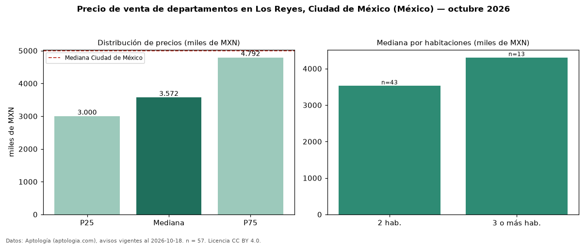

Precio de venta de departamentos en Los Reyes, Ciudad de México (México) — octubre 2026
En Los Reyes, Ciudad de México (México), la mediana de precio de venta de departamentos es MXN 3,57 millones, según 57 avisos vigentes. Frente a la mediana de Ciudad de México para departamentos (MXN 4,99 millones), queda 28 % por debajo. Por metro cuadrado, la mediana es MXN 45.870/m² (n = 56 avisos con área), 14 % por debajo de Ciudad de México (MXN 53.447/m²). Por precio mediano es el puesto 45 de 51 colonias de Ciudad de México con al menos 30 avisos de departamentos en venta (MXN): entre las más económicas. El área mediana anunciada es 78 m². El segmento con más oferta es el de 2 habitaciones (43 avisos, mediana MXN 3,53 millones); pasar de 2 habitaciones a 3 o más habitaciones cambia la mediana +22 %. La mitad central de los avisos va de MXN 3,00 millones a MXN 4,79 millones (razón 1,6), una dispersión moderada. Datos: Aptología (aptologia.com), CC BY 4.0 — https://www.aptologia.com/. Archivos: PDF, CSV con las cifras y gráfica PNG.

| Avisos únicos | 57 |
|---|---|
| Percentil 25 | COP 3.000.000 |
| Mediana | COP 3.572.000 |
| Percentil 75 | COP 4.791.662 |
| Mediana por m² | COP 45.869 |
Fuente: avisos vigentes de portales inmobiliarios recopilados por Aptología, deduplicados (mínimo 30 avisos únicos por celda). Precios pedidos, no cerrados. Fecha: 2026-10-18.